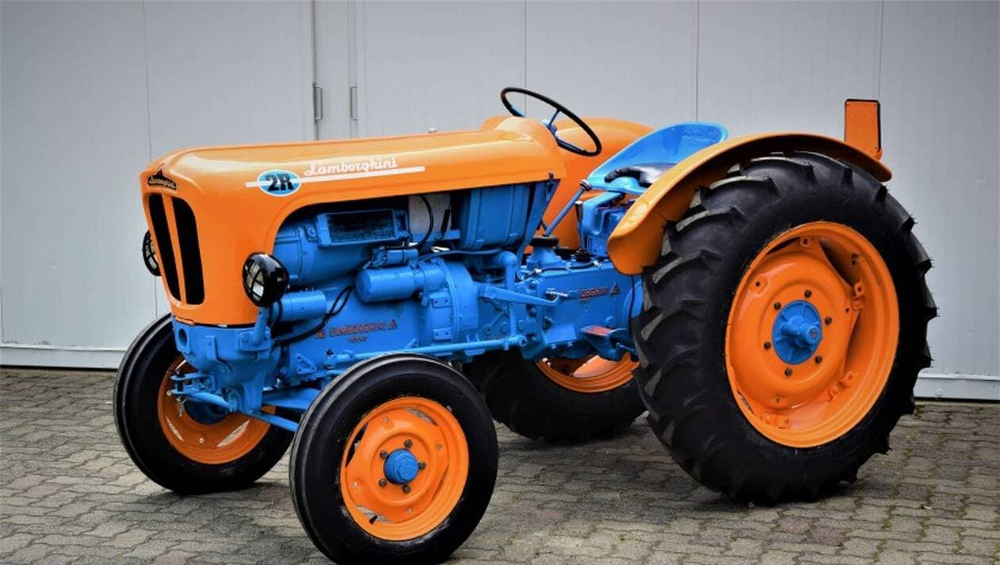

Ferruccio Lamborghini est l'homme qui est à l'origine de cette marque qui était auparavant destiné à concevoir et à construire des tracteurs. L'histoire de Lamborghini est ponctuée de provocations. L'origine même de la marque constitue un défi. Alors qu'il était constructeur de matériel agricole, Ferruccio Lamborghini décida de venir concurrencer Enzo Ferrari sur son terrain de prédilection : la conception et la production de voitures de grand tourisme.

Lamborghini DLA 35 de 1957
D'emblée, Lamborghini voulut surpasser son rival avec des technologies plus avancées et un style plus audacieux. Il le prouva dès 1963 en présentant l'iconoclaste
350 GTV.
 Lamborghini 350 GTV de 1963
Lamborghini 350 GTV de 1963
En 1966, Lamborghini lança la Miura, une fabuleuse berlinette qui symbolisait l'ambition de Ferruccio Lamborghini par sa modernité tant sur le plan esthétique que par sa mécanique. Le ton était donné. Dans le sillage de la Miura, la marque a toujours proposé des berlinettes superlatives en marge d'une lignée moins extrémiste. Le catalogue a ainsi comporté des coupés à moteur avant (les 350 GT, 400 GT, Islero, Jarama, Esapada) ainsi que des modèles à moteur huit-cylindres (Urraco, Silhouette, Jalpa) et même des tout-terrain (LM002). Aujourd'hui encore, il existe la Huracán à moteur V10 - qui a succédé à la Gallardo - et le SUV Urus.
Mais au sommet de la gamme, il y eut toujours une machine d'exception, hors normes, extraordinaire. Sans interruption, Lamborghini a entretenu la tradition de ces automobiles extravagantes. Chaque génération semble repousser les limites de l'exubérance : la Countach en 1971, la Diablo en 1990, la Murciélago en 2001 et l'Aventador en 2011. A côté des versions "de séries", Lamborghini a en outre développé des variantes plus exclusives encore, fabriquées en séries limités et contingantées.
Dans une interview donnée en 1983, Ferruccio Lamborghini raconte ainsi le démarrage de l'une des aventures les plus audacieuses de l'histoire de l'automobile. Lamborghini s'était juré de répondre à la provocation par la provocation. Aiguillonné par le velléitaire se lance dans l'aventure des Automobili Ferruccio Lamborghini SAS en 1963.
Ferruccio Lamborghinivoit le jour dans le village de Renazzo de Cento, en Emilie-Romagne le 28 avril 1916. Aîné d'une fratrie de cinq enfants, il naît sous le signe du Taureau dont il reprendra la silhouette massive, les élans fougueux et la carrure volontaire, et dont il fera son emblème. Dans la ferme familiale, Ferruccio est plus attiré par les machines agricoles que par les cultures elles-mêmes, au grand dam de ses parents qui voulaient lui confier la marche de la ferme. Il suit des études techniques et se familiarise aux secrets du métal et de la forge chez un maréchal-ferrant, puis il trouve un emploi dans un atelier de Bologne où sont entretenu les véhicules de l'armée. Lorsque les hostilités éclatent, Ferruccio Lamborghini endosse l'uniforme de l'armée de l'air et se retrouve sur l'île de Rhodes, alors sous domination italiene. Il passe ainsi les années sombres dans le garages de l'Autocentro militaire.
Après la capitulation de l'Allemagne, Rhodes est libérée par les troupes britanniques, Ferruccio Lamborghini revient en Italie, il se marie, a un fils, Tonino, et ouvre une petite entreprise d'équipements sportifs. Il ne néglige toutefois pas sa passion pour la mécanique et fait l'acquisition d'une Fiat 500 Topolino qu'il transforme pour participer à quelques courses, notamment aux Mille Miglia 1948. Conscient des besoins de l'Italie en matériel agricole, Ferruccio Lamborghini s'intéresse de près à la fabrication des tracteurs. Il ouvre un petit garage dans sa ville natale et achète du matériel militaire réformé auprès de l'agence italienne de redistribution des surplus. Les premiers tracteurs Lamborghini sont équipés de moteurs et de transmissions provenant de véhicules militaires.